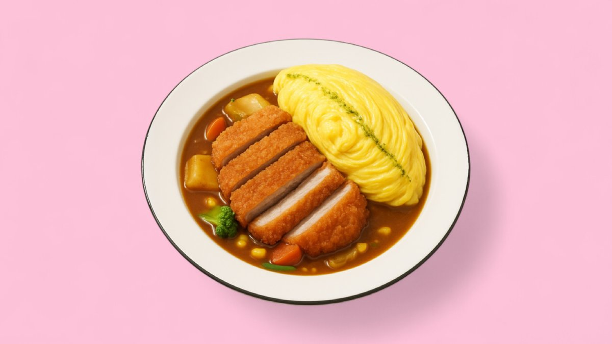
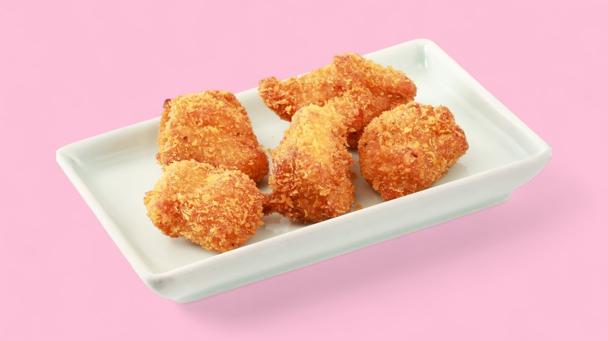
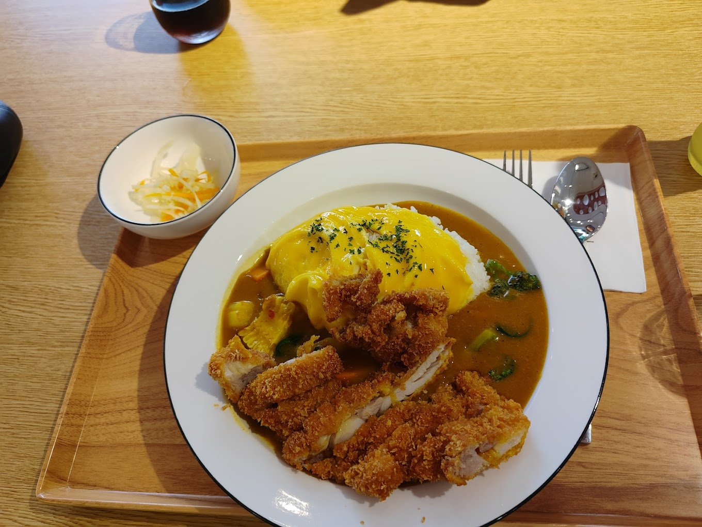

Chinai's Curry
Curry japonais · Omurice · Katsu
On vous dira « curry indien ». C'est japonais — un roux épais et mijoté, versé sur riz, sous une omelette roulée tracée d'une ligne d'herbes, et une pièce panée bien croustillante.
Pas indien. Japonais.
Le nom prête à confusion — plus d'une fiche en ligne range la maison dans la case « curry indien ». Chinai's Curry sert en réalité du curry japonais : un roux épais et mijoté, loin des sauces plus fines et plus relevées des curry indiens ou thaïs.
Chaque assiette suit la même construction : riz, curry, omurice — l'omelette roulée, tracée d'une ligne d'herbes au dressage — et une pièce panée ou croustillante par-dessus.
Une même construction, à chaque assiette.
Trois couches, toujours dans le même ordre, quelle que soit la garniture.
Le riz
Une base de riz blanc chaud, versée en premier dans l'assiette.
Le curry
Un roux épais, mijoté longuement — la marque du curry japonais, plus doux et plus dense qu'un curry indien ou thaï.
L'omurice & la garniture
Une omelette roulée, tracée d'une ligne d'herbes au moment du dressage, posée sur katsu, canard croustillant ou poulet popcorn.
La même ligne, sur chaque plat.
Photos de la maison — la ligne d'herbes tracée à la main revient sur chaque omurice, quelle que soit la garniture.
 Tonkatsu · omurice au curry
Tonkatsu · omurice au curry Poitrine de bœuf · omurice au curry
Poitrine de bœuf · omurice au curry
Bœuf entrecôte · omurice au curry Poulet popcorn · omurice au curry
Poulet popcorn · omurice au curry Poulet popcorn
Poulet popcorn
KaraageCurry, ramen, udon.
Relevé de la carte de livraison — plats, accompagnements et boissons. La carte et les tarifs actuels sont à confirmer avec l'établissement.
Curry japonais — signature
Ramen & udon
Tonkatsu chashu, bœuf entrecôte, katsu poulet, canard ou tempura de crevettes — de 18.70 € à 24.70 € selon la garniture.
Accompagnements
Boissons
Softs 3.10 € · Asahi / Qingdao 4.70 € · Bofferding 3.60 € · boissons asiatiques (Wanglaoji, Foco, aloe) 3.60–4.70 €.
Prix relevés sur Wolt (2026) — carte et tarifs actuels à confirmer avec l'établissement.
Un décor pensé pour la photo.
Petite salle à la Gare, service rapide, livraison Wolt en continu — le genre d'adresse où l'on vient pour un curry réconfortant autant que pour l'assiette elle-même.
"At Chinai's Curry, you might go in for the elaborate decor, designed to look good on Instagram, but you'll stay for what's on the plate."— Paperjam (en anglais), à propos des nouvelles adresses de la Gare

29 Rue Joseph Junck, Gare.
Chinai's Curry n'a pas de site officiel — seulement une page Wolt et des fiches d'annuaires. Ceci est une proposition de site, composée à partir de vos photos et de votre carte.